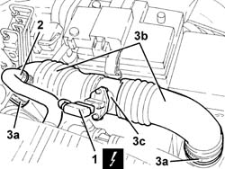

1048A53 PIPE ASSEMBLY SLEEVES AND AIR FLOW MEETER FROM AIR CLEANER TO THROTTLE BODY R R
- Path
- Procedures > 10 ENGINE UNIT > 1048 ENGINE AIR SUPPLY CIRCUIT > 1048A VACUUM AIR CIRCUIT > 1048A53 PIPE ASSEMBLY SLEEVES AND AIR FLOW MEETER FROM AIR CLEANER TO THROTTLE BODY R R
- Kind
- repair procedure (removal / refitting; the operation number is the code)
- Applies to
- all engines; all production periods
- Interactive page
- https://sloeber94.github.io/elrnDB-aGt/en/#/125001024
Applies to: all engines; all production periods
 Removing
Removing
 Refitting
RefittingEnsure that the ignition key is in the stop OFF, then disconnect the battery negative terminal.
Name | Connector | |
|---|---|---|
- | Battery | See A1B BATTERY ( CONNECTORS ) |
1. Disconnect the electrical connection from the air flow meter.
Name | Connector | |
|---|---|---|
1 | Air flow meter | See K41 AIR FLOW METER ( CONNECTORS ) |
Disconnect the electrical wiring for the flow meter from the fastening on the air intake sleeve.
2. Disconnect the oil vapour recirculation pipe from the air intake duct.
3. Undo the bolts (3a) and remove the air intakehouse (3b) complete with air flow meter (3c).

Applies to: all engines; all production periods
Refitting
RemovingRefit the air intake hose with air flow meter and secure with collars.
Connect the oil vapour recirculation pipe to the air intake duct.
Connect the electrical connection to the air flow meter and secure the electrical wiring to the fastening on the air intake sleeve.
Connect the battery terminal (-).